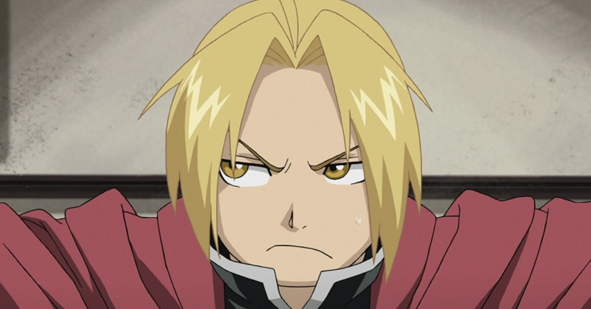

Edward Elric (エドワード・エルリック, Edowādo Erurikku) é o protagonista das séries Fullmetal Alchemist e Fullmetal Alchemist: Brotherhood. Ele é o mais jovem Alquimista Federal na história da organização, tendo sido admitido aos 12 anos.
Um gênio que obteve o título de Alquimista Federal sendo o mais jovem da história. A alcunha "Fullmetal Alchemist" vem de sua mão direita e pé esquerdo sendo próteses de aço (Automail). Desejando recuperar o corpo original, ele continua sua jornada em busca da "Pedra Filosofal" junto com seu irmão. (Site Hagaren)
Ed usa um sobretudo vermelho que vira sua marca registrada. É longo, alcançando suas panturrilhas, de cor vermelho vivo e com capuz, na parte das costas, há a estampa de seu símbolo alquímico (herdado de sua mestra, Izumi Curtis) em branco. Aparentemente, Edward criou este sobretudo para si mesmo.
Apesar das roupas de Ed mudarem ao longo da série, ele parece preferir roupas pretas, que são quase unanimidade em todas as suas peças de roupa. Como tentativa de parecer mais alto, Edward muitas vezes usa sapatos e botas de solas grossas. Quando em público, Edward muitas vezes usa luvas brancas como uma forma de esconder seu braço de automail.
